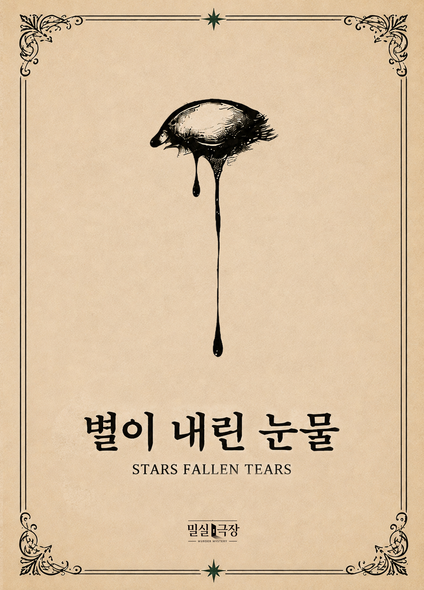

별이 내린 눈물
엔딩페이지입니다.
엔딩 단계에서만 확인하세요.

엔딩페이지입니다.
엔딩 단계에서만 확인하세요.
THE FINAL VOTE
투표에서 범인으로 최다 득표한 인물을 선택하세요.
ENDING
에밀이 기밀 문서 2개를 소지하고 있습니까?
ENDING CONDITIONS
공개된 단서를 선택해 주세요.
ENDING CONDITIONS
알베르트가 유대인 중
누구를 포박했습니까?
THE END
EPILOGUE